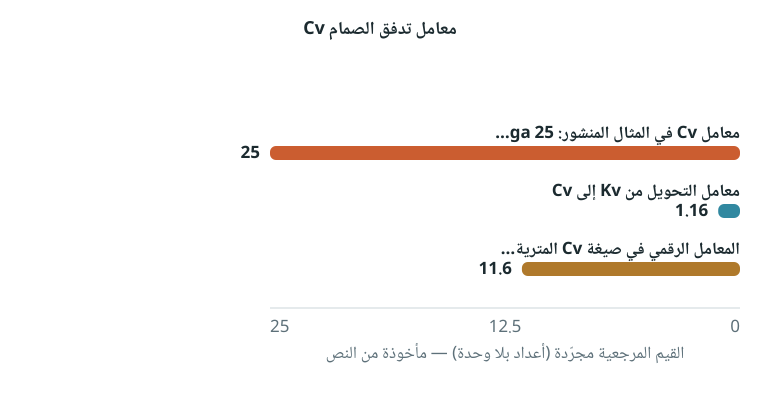

معامل تدفق الصمام Cv
Valve Flow Coefficient Cv
رقم تجريبي يعبّر عن سعة الصمام: كم غالونًا أمريكيًّا من الماء عند 60 °F يمرّ في الدقيقة بهبوط ضغط رطل واحد على البوصة المربعة؛ ونظيره المتري Kv، وكلاهما يُقاس لا يُحسب.
Cv هو المعيار التجاري لوصف سعة صمام التحكّم، ومعناه الحرفي: تدفق الماء عند 60 °F بالغالون الأمريكي في الدقيقة الذي يمرّ عبر الصمام المفتوح كاملًا بهبوط ضغط 1 psi. فصمام Cv = 25 يمرّر 25 gal/min بهبوط 1 psi، ويمرّر ضعف ذلك عند أربعة أضعاف الهبوط لأن التدفق يتناسب مع الجذر التربيعي للهبوط. والسعة تُقاس على الماء، ثم تُستعمل لسوائل أخرى بمعامل الكثافة النوعية، وللبخار والغازات بمعادلات مختلفة تمامًا لأن المائع قابل للانضغاط ويصير الجريان مخنوقًا عند نسبة ضغط حرجة. والنظير المتري Kv يعرَّف على الماء بين 5 و30 °م بالمتر المكعب في الساعة بهبوط بار واحد، والعلاقة بينهما خطية بمعامل 1.16. وأهم قرار هندسي في الموضوع ليس الحساب بل الاختيار: صمام مفرط السعة يعمل عند فتحات صغيرة فيزيد ربح الحلقة ويضيق نطاقها ويُظهر منطقة ميتة أوسع، فيتذبذب التحكّم حتى لو كانت المعادلة سليمة.
كيف تعمل الظاهرة؟
تدفق السائل عبر فتحة الصمام يخضع لعلاقة بيرنولي مع خسارة: التدفق يتناسب مع الجذر التربيعي لهبوط الضغط، ومع الجذر العكسي للكثافة النوعية. لهذا صار التعريف مبنيًّا على مائع مرجعي واحد، فتُقاس سعة الصمام مرة على الماء في ظروف معلومة، ثم يُعاد تحجيمها لأي سائل بمعامل الكثافة. وحدّ هذه الصورة أن السائل حين يقترب ضغطه من ضغط بخاره داخل الصمام (الاختناق بالتبخير) تتوقّف الزيادة في التدفق ولو زيد الهبوط، فيدخل مفهوم انخفاض الضغط المسموح ومعامل الاستعادة FL، وهو ما تُعالجه كتالوجات الصمامات لا معادلة Cv البسيطة.
العلاقة بالأرقام
بالسوائل: Cv = q √(SG/Δp) بـgal/min وpsi، وبالصورة المترية Cv = 11.6 q √(SG/Δp) بـm³/h وkPa. والمثال المنشور: 25 gal/min عند 1 psi تعطي Cv = 25. والتحويل إلى النظام المتري بسيط: Cv = 1.16 Kv و Kv = 0.862 Cv. وللبخار المشبع: عند الجريان المخنوق p_o ≈ 58% من p_i و Cv = m/(1.61 p_i) بالرطل/ساعة والبوصة² المطلقة، وبالمتري kv = m/(12 p_i) بالكيلوغرام/ساعة والبار المطلق؛ وللبخار المحمّص تصحيح 1 + 0.00065 Δt بالدرجة فهرنهايت، وللبخار الرطب تصحيح بجذر الكسر الجاف. وللغازات: الهبوط الحرج ≈47% من ضغط المدخل المطلق و p_o ≈ 53% منه، ودونه تُستخدم معادلة الجذر التربيعي للهبوط.
مفاهيم متقاربة
الخطأ الأول أن يُختار الصمام على قطر الأنبوب بدل Cv، والثاني أن يُهمل نسبة الهبوط الحرج للغاز فيُحسب تدفق يتضاعف بلا حدّ كلما زاد الضغط الخلفي انخفاضًا، والثالث أن يُستخدم Cv على سائل لزج بلا تصحيح، والرابع أن يُقارن Cv من مصنّع بآخر بلا التأكد من ظروف القياس. والخامس تجاريًا هو المبالغة في السعة احتياطًا، وهي التي ينبّه المصدر إلى أنها تُزيد تذبذب العملية وتُوسّع المنطقة الميتة عند الفتحات الصغيرة.
حدود التطبيق
Cv و Kv رقمَا سعة عند فتح كامل، ولا يصفان سلوك الصمام في المواضع الجزئية، فكل صمام له خاصية تدفق (خطية أو متساوية النسبة) لا تُستخرج من Cv. والتجربة المرجعية على الماء البارد، والتحويل للغازات يعتمد على معاملات تجريبية للمصنّع (FL و xT) قد تختلف بين الأنواع. ولا تصلح المعادلات للجريان ثنائي الطور ولا للطيني ولا للغازات المكثّفة إلا بمعالجات خاصة، وهذا ما يجعل اختيار الصمام في الخدمات الحدّية عملًا كتالوجيًّا لا حسابًا مدرسيًّا.

| الكمية | القيمة | المصدر |
|---|---|---|
| معامل Cv في المثال المنشور: 25 gal/min من الماء عند هبوط 1 psi | 25 — | [2] |
| معامل التحويل من Kv إلى Cv | 1.16 — | [1] |
| المعامل الرقمي في صيغة Cv المترية (q بالمتر المكعب/ساعة و Δp بالكيلوباسكال) | 11.6 — | [2] |
| نسبة ضغط المخرج إلى المدخل عند الجريان المخنوق في البخار | 58 % | [2] |
| نسبة ضغط المخرج إلى المدخل عند الجريان المخنوق في الهواء والغازات | 53 % | [2] |
المصادر
- 1 Flow Coefficient Cv vs. Flow Factor Kv — The Engineering ToolBox. www.engineeringtoolbox.com/flow-coefficient-factor-d_238.html · اطُّلع عليه 2026-11-28
- 2 Liquid, Steam and Gas - Flow Coefficients Cv — The Engineering ToolBox. www.engineeringtoolbox.com/flow-coefficients-d_277.html · اطُّلع عليه 2026-11-28
استشهد بهذا المصطلح
الصيغتان مبنيتان من بيانات الصفحة نفسها: العنوان والتاريخ ورابط النسخة المنشورة.
معامل تدفق الصمام Cv — Valve Flow Coefficient Cv. (2026). ديوان المعرفة — انفراد. https://infiradev.com/diwan/terms/term-valve-flow-coefficient.html
@misc{term-valve-flow-coefficient2026,
title = {معامل تدفق الصمام Cv},
titleaddon = {Valve Flow Coefficient Cv},
howpublished = {{ديوان المعرفة — انفراد} — مرجع علمي عربي},
year = {2026},
url = {https://infiradev.com/diwan/terms/term-valve-flow-coefficient.html},
urldate = {2026-11-28},
note = {مراجعة علمية: Abdullah Al-Huwaidi}
}
راجعه: Abdullah Al-Huwaidi · 2026-11-28 · آخر تحديث 2026-11-28